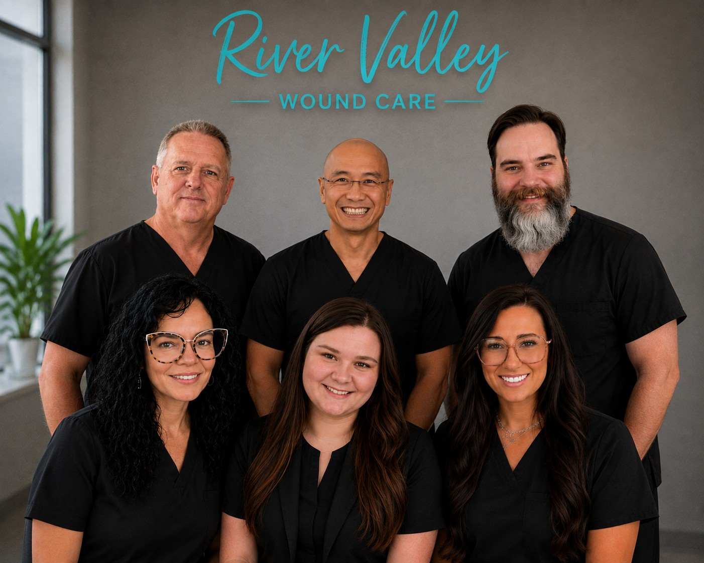

What to Expect at a Wound Care Visit
New Patients · Clinic Visit
Feeling nervous about your first visit? We’ll walk you through what happens during a typical appointment at River Valley Wound Care, from intake to dressing selection.
Articles to help you understand wound care, protect your health, and know when to seek specialized treatment.

Explore practical guidance on your first visit, warning signs, and how diabetes affects wound healing.
Feeling nervous about your first visit? We’ll walk you through what happens during a typical appointment at River Valley Wound Care, from intake to dressing selection.
Not every scrape needs a wound clinic, but some warning signs mean it’s time to see a specialist. Learn what to watch for, including slow healing, increasing pain, and signs of infection.
High blood sugar, nerve damage, and circulation problems can all interfere with normal healing. This article explains why diabetic foot ulcers are serious and how early care can prevent complications.